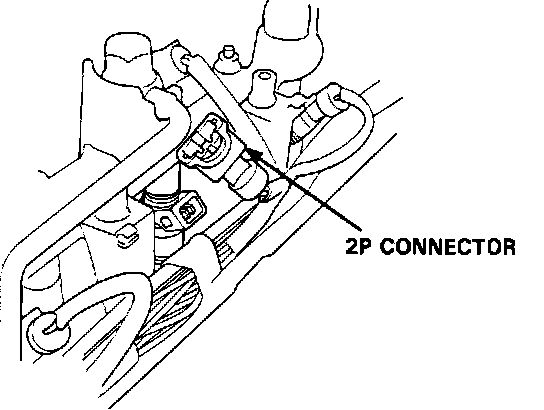
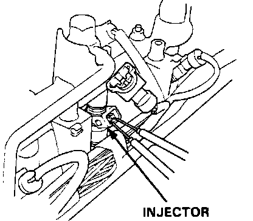

Fuel Injector: Testing and Inspection
NOTE: Before testing the injectors, check the basic engine condition and tune-up. Do NOT assume that the injectors are at fault until checking idle speed, ignition timing, and idle CO%.Injector Spray Pattern:

Spray pattern quality effects all aspects of engine performance. Poor fuel injection performance can contribute to:
^ Hard starting and stalling when cold
^ Poor cold driveability
^ Rough idle
^ Backfiring on acceleration
^ Combustion knock
^ Poor warm restart
^ Surging at cruise speed
^ Dieseling
IF THE ENGINE WILL RUN:
1. Disconnect the Electronic Air Control Valve connector.
2. With the engine idling, disconnect each injector in turn and note the change in idle speed.
a. If the idle speed drop for each cylinder is almost the same, the injectors are normal.
b. If the idle speed or quality remains the same when you disconnect a particular injector, replace that injector and retest.
3. Turn the ignition switch off, reconnect the Electronic Air Control Valve connector and remove the ALTERNATOR SENSE fuse for 10 seconds to reset the ECU.
4. Start the engine and allow to idle. Check each injector for clicking with a stethoscope.
If any injector fails to make the typical clicking noise, try replacing the injector. If clicking is still absent, check the following:
a. Break, short-circuit, or poor connection in the YEL/BLK wire between the main relay and the injector resistor.
b. Open circuit or corrosion in injector resistor.
c. Break, short circuit, or poor connection in the RED/BLK wire between the injector and the injector resistor.
d. Break, short circuit, or poor connection in wire between the injector and the ECU.
5. If everything is OK, refer to COMPUTERIZED ENGINE CONTROLS.
Injector Connector:

Injector Resistance:

IF THE ENGINE CAN NOT BE STARTED:
1. Remove the connector from each injector and measure the resistance between the two terminals. Resistance should be:
1.5 - 2.5 ohms.
2. If measured resistance is not within specifications, replace the injector.
3. If measured resistance is correct, refer to FUEL PRESSURE CHECK.
4. If fuel pressure is as specified, check wiring as instructed in steps 4-a,b,c,& d in the section above.